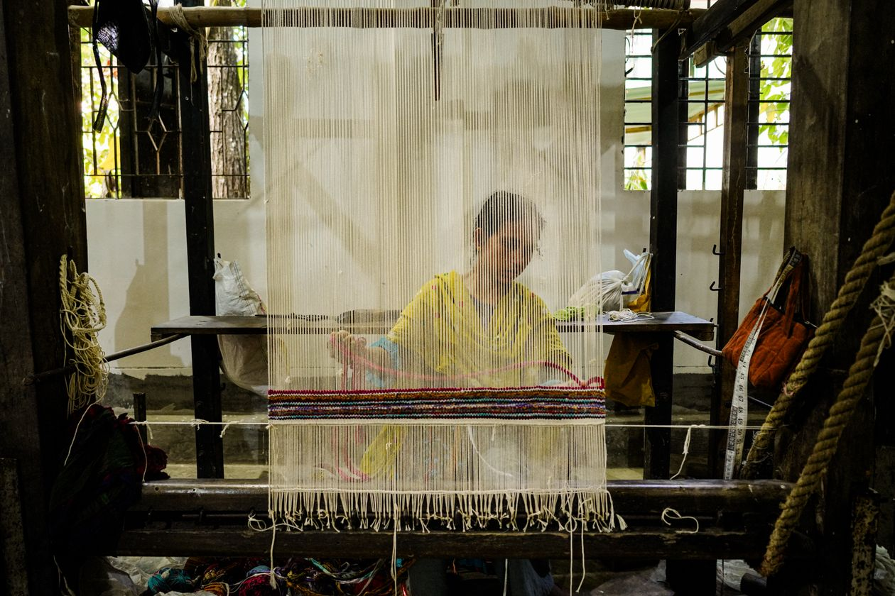
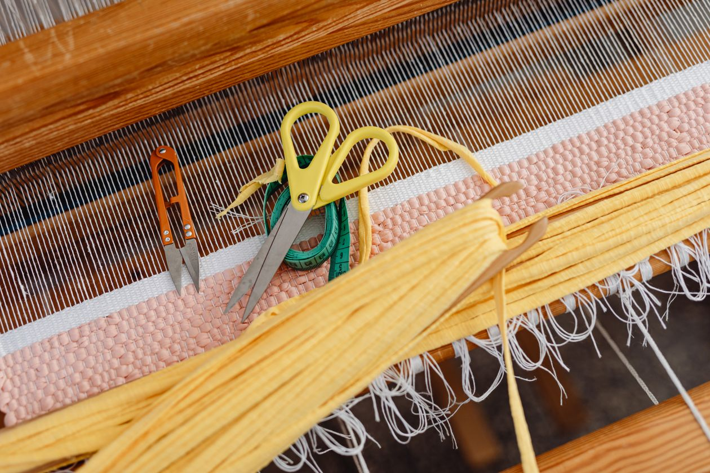

About the weaver
The loom was my father's.
The counting is mine.
I learned the pit loom at eleven, sitting where my daughter sits now, winding pirns and being sent away on dressing days. My father wove for the cooperative and for private brides in the same week and kept two notebooks, because the two kinds of honesty are different. In 1991 the loom became mine. It is the third loom this house has worn out its floor around, and the shed roof has been re-tiled twice above it.
A pit loom is a slow instrument with a long memory. My legs work the treadles in the pit my grandfather dug; the warp passes over my knees; a sari takes the time it takes. I weave one sari at a time, and the queue is a queue — when the wedding season comes, Kanchipuram fills with cars double-parked outside silk shops, and my answer to a late enquiry is a date, not a discount.
My one vanity is the count. Power-loom cloth is not wicked; it is simply not this. A power-loom sari at a wedding is a photograph of a meal — it looks like dinner, and nobody is fed. What I sell is the counted thing: 4,800 ends, 30 picks to the centimetre, zari weighed on the small brass scale before it is weighed into the price.
- At the loom since1991 (learning since age 11)
- LoomPit loom, throw shuttle, jacquard for borders
- Saris delivered612
- Warp count4,800 ends · 5,280 for nine yards
- Weft count30 picks a centimetre
- HelpA brother who punches jacquard cards; a daughter who counts and couriers


Zari, said plainly
Most quarrels about a sari's price are quarrels about one word. Here is what the three classes on my loom card actually are:
Tested zari is a copper thread, silver-plated and dipped in gold colour. It is honest metal and it is what most good saris have always used. It will darken a little over decades if it is stored damp. It is not imitation anything; it is tested zari, and it should be sold as tested zari.
Half-fine zari carries more silver under a thinner gold surface — brighter, costlier, and the class I reach for when a family wants heirloom weight without an heirloom bill.
Pure zari is silver thread wrapped in real gold. It is why a pure-zari sari costs what a small car costs, and why I keep the thread merchant's certificate with the loom card. When you buy pure from me, the certificate travels with the sari.
My refusal, printed so I cannot quietly drop it: the word “pure” never appears on a sari of mine unless the thread is pure. A shop tag that says “pure zari look” is telling you, in its own way, the truth. Read it as such.
About the GI tag — an honest paragraph
Kanchipuram's silk saris hold a Geographical Indication tag, and rightly: this town's weave is a real tradition with real standards. The tag belongs to that tradition and to its registered producers, who submit to its checks. My saris are not sold under the GI tag. They are sold under my name, with my loom card in the fold — ends, picks, grams, days, price, all counted and all checkable. If the tag matters to you, buy from a registered producer and ask to see the authorisation. If the count matters to you, you are in the right shed.
Keeping a handloom sari
Store it folded in cotton — the cloth it arrived in will do for sixty years — with the border folded inside, never outside taking the weight. Refold along different lines every few months; silk remembers a crease the way the loom remembers a count.
Never hang a zari sari by its border. The metal thread is heavier than the silk and will argue with gravity all year. Flat or rolled is the whole law.
Air it before the festival, not after. A morning in shade before Diwali wakes the silk; a week in a closed box after the sweets is how borders darken.
Cleaning: dry-clean only, and tell the cleaner in words that it is zari — tested, half-fine or pure, whichever your card says. If a thread ever lifts at the border, bring the sari back to the loom before it travels. Border repairs from the original card are charged at the day rate, counted the same way.